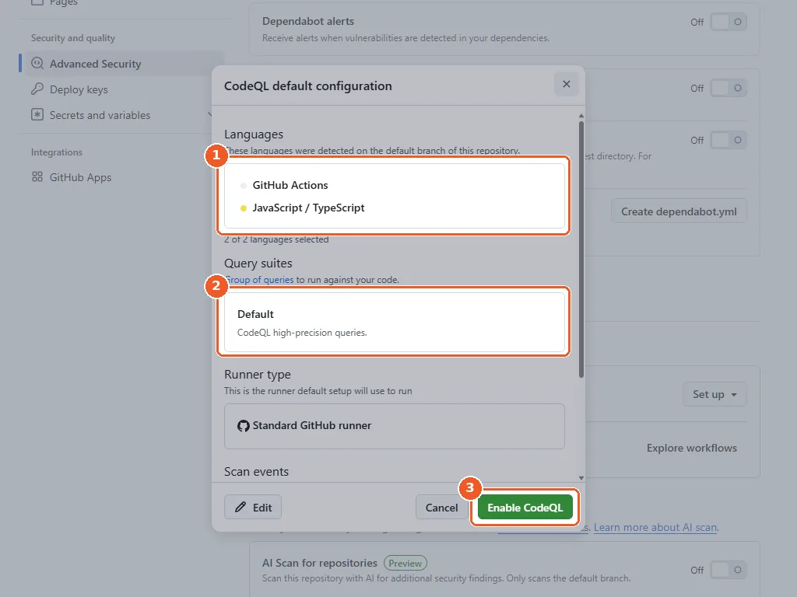
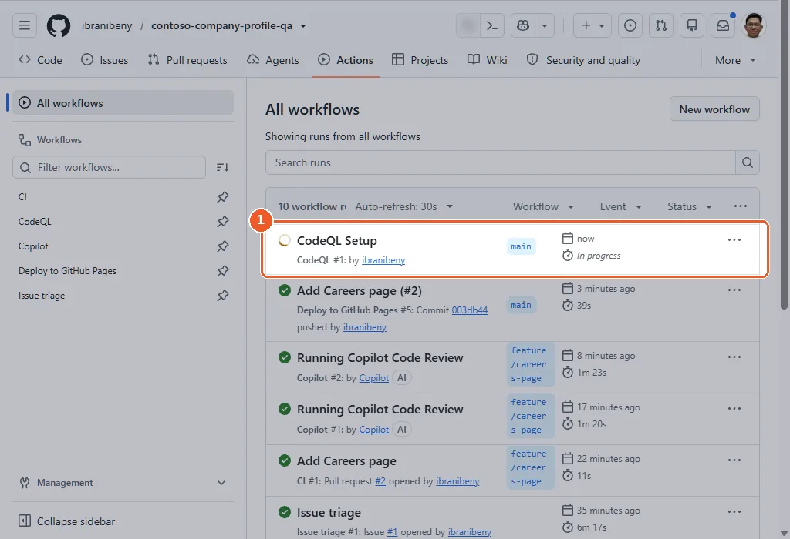
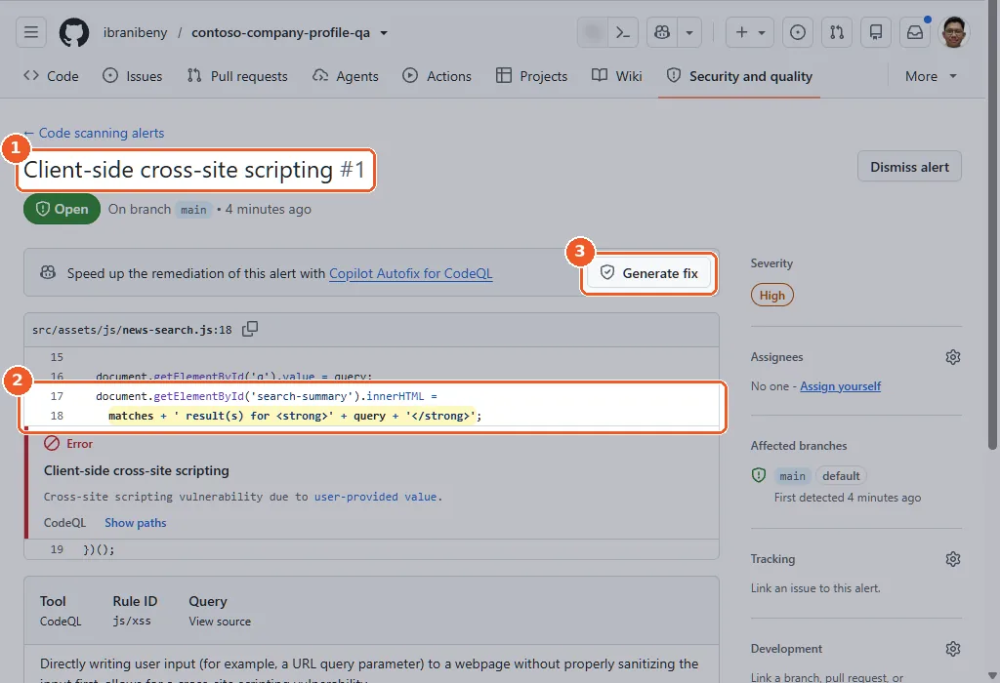
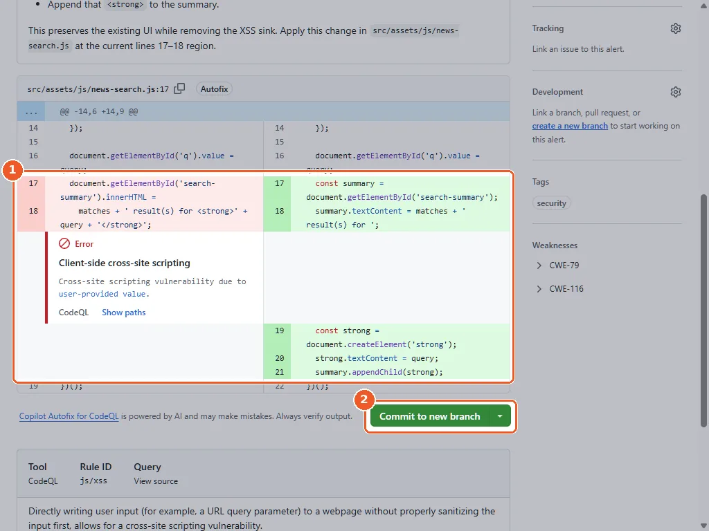
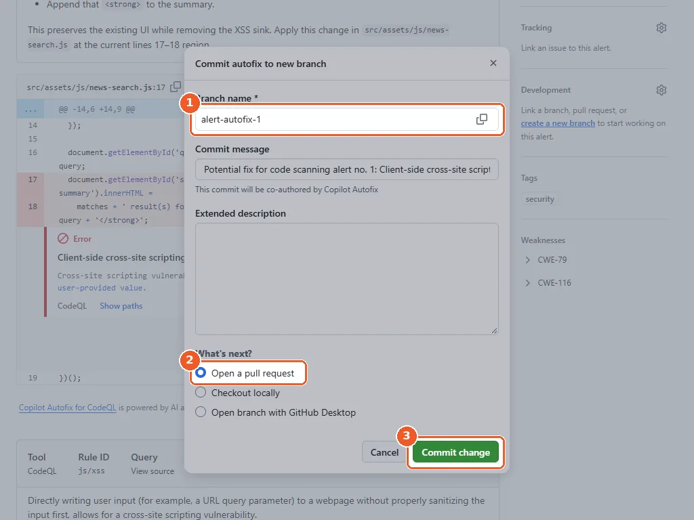
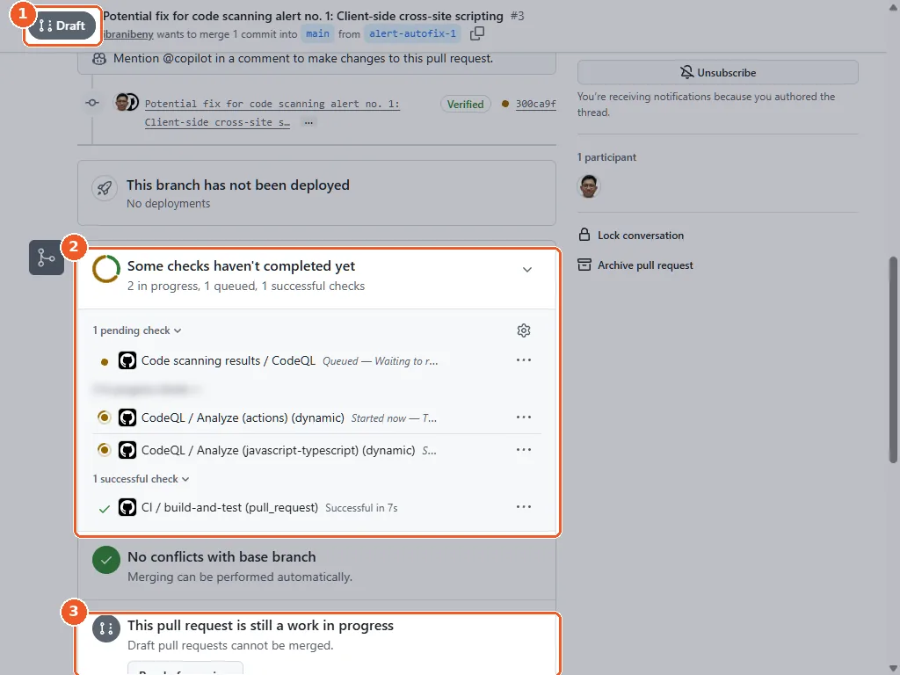
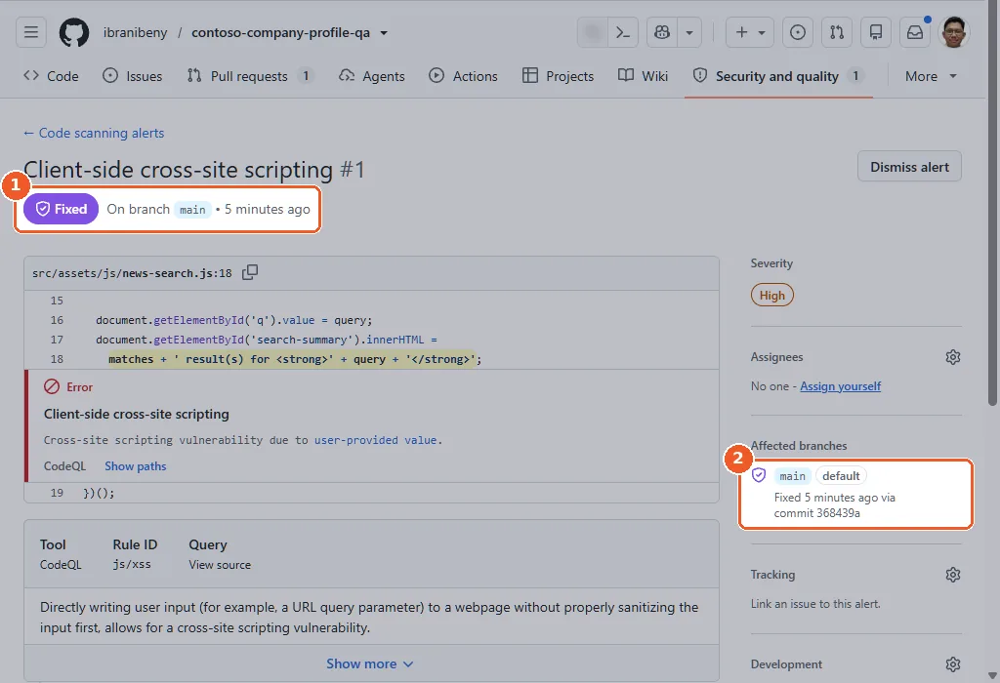
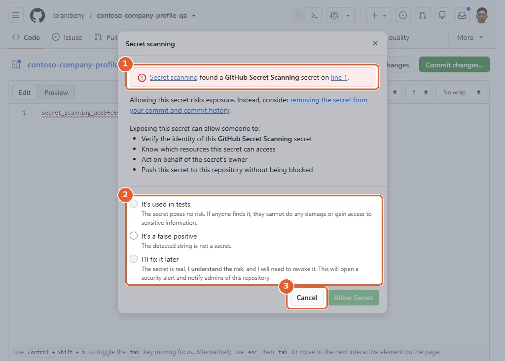

Chapter 5 · about 35 minutes
Code security: CodeQL, Copilot Autofix and push protection
Turn on CodeQL code scanning, find the cross-site scripting bug hidden in the legacy newsroom search, fix it with Copilot Autofix and watch push protection stop a secret before it lands.
Raka: “Copilot reviewed the new code. Fine. Who reviewed the old code from the agency? Nobody. Scan everything.”
@ starts a file reference, so @copilot turns into @.github/copilot-instructions.md.Turn on CodeQL default setup
- Open Settings → Advanced Security.
- Under Code Security → Tools, find CodeQL analysis, select Set up → Default.
- Review the languages (JavaScript/TypeScript and GitHub Actions) and select Enable CodeQL.
gh api -X PATCH "repos/{owner}/{repo}/code-scanning/default-setup" -f state=configured
gh api "repos/{owner}/{repo}/code-scanning/default-setup" --jq '{state, languages}'Optional. It changes a repository setting, which the codespace's built-in token cannot do, so run it where you signed in with your own account (how).


- 1CodeQL detected GitHub Actions and JavaScript / TypeScript.
- 2The Default query suite: high-precision queries.
- 3Select Enable CodeQL.


- 1CodeQL Setup starts at once; it took about four minutes in our run.
Why it matters: Default setup needs no workflow file: GitHub picks the languages and scans on every push and pull request to main, plus weekly.

Find the vulnerability
When the first analysis finishes (about four minutes in our run), open Security and quality → Code scanning. CodeQL reports a cross-site scripting alert in src/assets/js/news-search.js: the q URL parameter flows into innerHTML.
gh api "repos/{owner}/{repo}/code-scanning/alerts?state=open" \
--jq '.[] | [.number, .rule.id, .most_recent_instance.location.path] | @tsv'Optional. It reads security alerts, which the codespace's built-in token cannot do, so run it where you signed in with your own account (how). Expected: a cross-site scripting alert in src/assets/js/news-search.js.


- 1Client-side cross-site scripting, severity High.
- 2The search query flows into innerHTML on line 18 of news-search.js.
- 3Select Generate fix.
The vulnerable lines from the legacy widget:
document.getElementById('search-summary').innerHTML =
matches + ' result(s) for <strong>' + query + '</strong>';Why it matters: Anyone could craft a newsroom link that runs script in a visitor's browser. CodeQL shows the full path from source to sink.
Generate a fix with Copilot Autofix
- On the alert, select Generate fix. Within a minute Copilot Autofix explains the problem and proposes a patch.
- Review the diff, then select Commit to new branch.
- Keep the suggested branch (
alert-autofix-1) and Open a pull request, then select Commit change. The pull request opens as a draft.
ALERT=$(gh api "repos/{owner}/{repo}/code-scanning/alerts?state=open" \
--jq '[.[] | select(.most_recent_instance.location.path == "src/assets/js/news-search.js")][0].number')
echo "Alert: $ALERT"
gh api -X POST "repos/{owner}/{repo}/code-scanning/alerts/$ALERT/autofix"
sleep 30
gh api "repos/{owner}/{repo}/code-scanning/alerts/$ALERT/autofix" --jq '.status, .description'Asks Copilot Autofix for a fix. Re-run the last line until the status is success.
gh api -X POST "repos/{owner}/{repo}/git/refs" -f ref=refs/heads/fix/newsroom-xss \
-f sha="$(gh api "repos/{owner}/{repo}/git/ref/heads/main" --jq .object.sha)"
gh api -X POST "repos/{owner}/{repo}/code-scanning/alerts/$ALERT/autofix/commits" \
-f target_ref=refs/heads/fix/newsroom-xss -f message="Fix XSS in newsroom search (Copilot Autofix)"
gh pr create --base main --head fix/newsroom-xss \
--title "Fix XSS in newsroom search" --body "Copilot Autofix for code scanning alert #$ALERT"Commits the fix to a new branch and opens the pull request. Same terminal, so $ALERT is still set.


- 1Autofix replaces innerHTML with textContent and a safe strong element.
- 2Select Commit to new branch.


- 1Autofix proposes the branch alert-autofix-1.
- 2Keep Open a pull request selected.
- 3Select Commit change.
Why it matters: Autofix turns an alert into a reviewable fix in minutes. It is free on public repositories.
Merge the fix and close the alert
- CI and CodeQL already run on the draft. Select Ready for review: the ruleset from Chapter 4 then requests a Copilot review.
- When the checks pass (CodeQL reports no new alerts in the changed code), select Squash and merge.
- The next CodeQL analysis on
maincloses the alert: three to five minutes after the merge in our run.
Try it once the site redeploys: on the newsroom page, search for text that contains HTML tags. It now appears exactly as typed.
gh pr merge fix/newsroom-xss --squash --delete-branch
gh api "repos/{owner}/{repo}/code-scanning/alerts?state=fixed" --jq '.[] | [.number, .rule.id, .state] | @tsv'Only if you used the REST commands in 5.3; otherwise merge the Autofix pull request in the browser. The alert shows as fixed after the next analysis on main.


- 1A draft pull request cannot be merged.
- 2CI and CodeQL run on the fix.
- 3Select Ready for review, then merge when the checks pass.


- 1The alert is now Fixed on main.
- 2Closed by the next CodeQL analysis, via the merge commit of the fix.
See push protection stop a secret
Use GitHub's official dummy token (it is not a real credential) to see push protection in action:
- Open the GitHub Docs tutorial Storing your secrets safely and copy the dummy token from its section 2. Committing a dummy token.
- On your repository's Code tab select + next to Go to file → Create new file and name it
secret-test.txt. - Paste the dummy token and select Commit changes, then Commit changes again in the dialog.
- GitHub blocks the commit and explains why. Do not choose a bypass reason: select Cancel, then Cancel changes to discard the file.
git push. That is the same protection you are about to see.read -rsp "Paste the dummy token from the GitHub Docs tutorial, then press Enter: " TOKEN; echo
git switch -c test/push-protection
printf '%s\n' "$TOKEN" > secret-test.txt
git add secret-test.txt
git commit -m "Test push protection"
git push -u origin test/push-protectionExpected: GitHub rejects the push because it contains a secret. Do not bypass.
git switch main
git branch -D test/push-protection
unset TOKENDeletes the test branch and its blocked commit. Nothing reached GitHub.


- 1Push protection finds the GitHub Docs dummy token on line 1.
- 2A bypass needs a reason. Do not choose one.
- 3Select Cancel, then Cancel changes to discard the file.
Push protection for users is on by default and stops you pushing secrets to public repositories. GitHub Docs lists the surfaces it covers: pushes from the command line, commits made in the GitHub UI, file uploads and REST API requests. In our run it also blocked a commit made through the GraphQL API. See Push protection.
Why it matters: Secrets are stopped before they reach Git history, where they are expensive to remove and must be rotated.

Checkpoint
Raka: “Good. Now the part nobody wrote at all: your dependencies.”
Tested end to end on 12 Nov 2026: see the test runReport a problem with this page